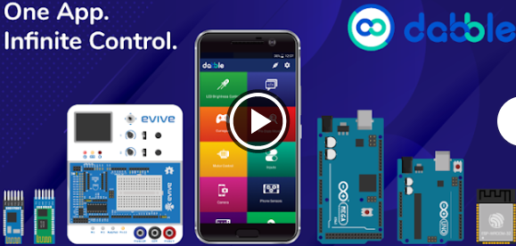

Pictoblox nos presenta dos alternativas para la comunicación inalámbrica, trabajar con la app dabble (Android/iOS) o también la app de Pictoblox para dispositivos móviles (Android/iOS).
Vamos a inclinarnos por el uso de dabble por ser una app muy liviana (19 MB) que funciona en la mayoría de los móviles, en comparación con Pictoblox (110 MB) que requiere celulares con mayores prestaciones de memoria y velocidad de procesador.
En el celular buscamos e instalamos dabble desde Google Play/App Store:

e fue tomado de un rey Danés del siglo 10 llamado Harald Blatand cuya traducción al inglés seria Harold Bluetooth. Este rey fue famoso por sus habilidades comunicativas ya que logro la unificación de las tribus noruegas, suecas y danesas.